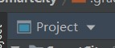

Android工程结构

.gradle和.idea目录
在创建项目时Android Studio自动生成的目录，移动源码时也会删掉这两个文件夹
app目录
项目中的代码、资源等，核心目录
app/build
make project生成的缓存文件
app/libs
存放jar包
app/src/
放置java代码、软件清单文件、xml布局文件、资源文件等。核心目录
其中，app/src/main/res/values/themes.xml中style标签内的parent属性需要做出下面的修改，否则软件内的部分控件属性将不会对修改做出变动
1 | Theme.MaterialComponents.DayNight.DarkActionBar |
gradle目录
构建器
gradle/wapper目录
存放gradle/wapper
.gitignore文件
项目版本控制文件
build.gradle文件
项目全局的gradle构建脚本
gradle.properties文件
项目全局的gradle配置文件
gradlew和gradle.bat文件
执行gradle命令
local.properties文
指定安卓sdk路径
setting.gradle
指定项目中所有引入的模块
External Libraries
第三方库